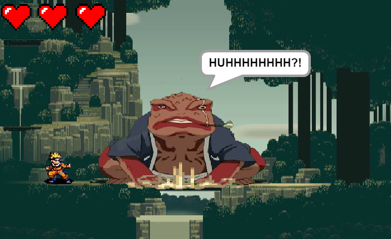
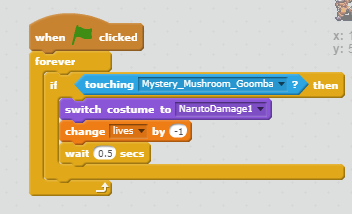
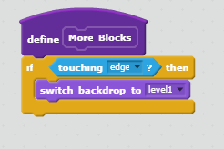
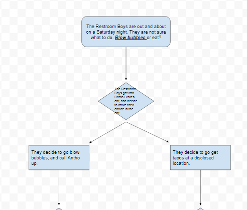
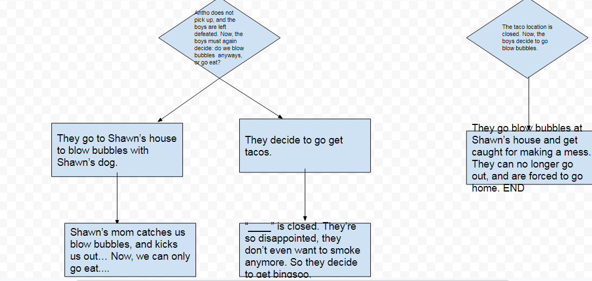
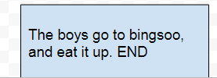

Super Mario World is a game that Sebastian Nguyen and I created.
We combined the elements of the popular anime, Naruto, and the prominent Super Mario games.
We added points as Naruto, the character you control, walked,
this was included as the enemy would charge towards the player.
Game difficulty would increase with more random movement.
You would die when you lose all 3 lives (hearts).
We created this game as we are avid Naruto fans, and sought for a side scroller that would be reminiscent of Super Mario Games.
I was very fond of the graphics and fluidity of the movement.
Some difficulties we faced were creating the levels, and editing the animations.
If we had more time and resources, we would make more levels and enemies.
We made an algorithim that would switch levels when you die to the enemy.
This algorithim made it possible to end the game.
 Ziggy's is a real life simulation game depicting a night with the Restroom Boys. The goal of the game is to find a task to do for the night; however, the Restroom Boys are faced with turmoil, tears, and tragedy along the way. As the player, you must find a way past these issues.
  When we created the game, we intended to include a timer to hurry the player, and see their performance under pressure. Throughout the project, we faced many difficulties. For example, we had trouble writing out the decisions; to fix this issue, we simply used the print function instead of the line function. Moving on, the advantages of building a program through procedural abstraction allowed for better organization and playability for the user. A story we were fond of was Jeremy Nguyen's, it included many options and flowed smoothly.